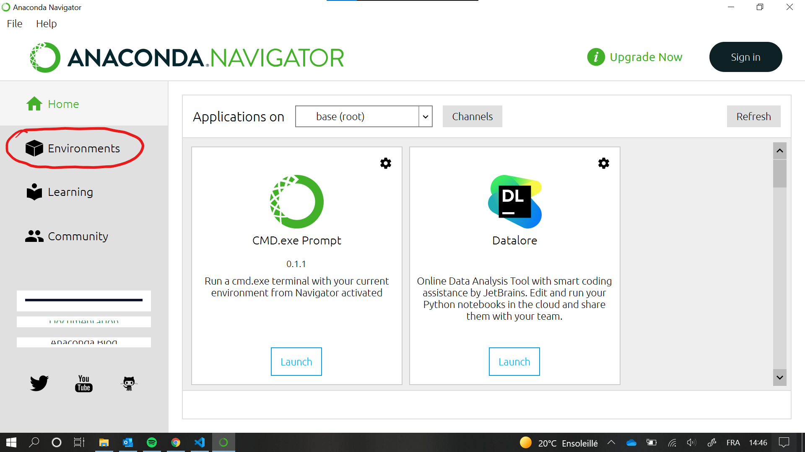
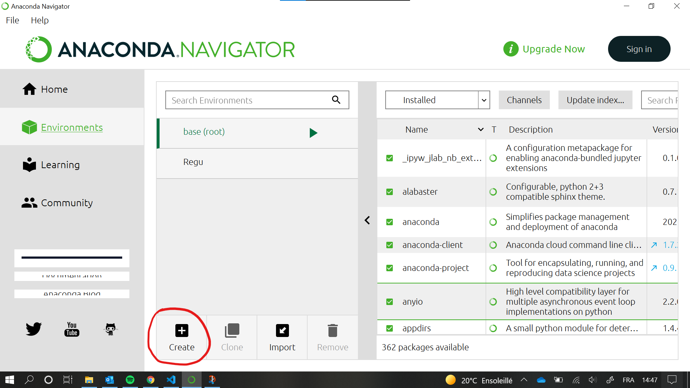
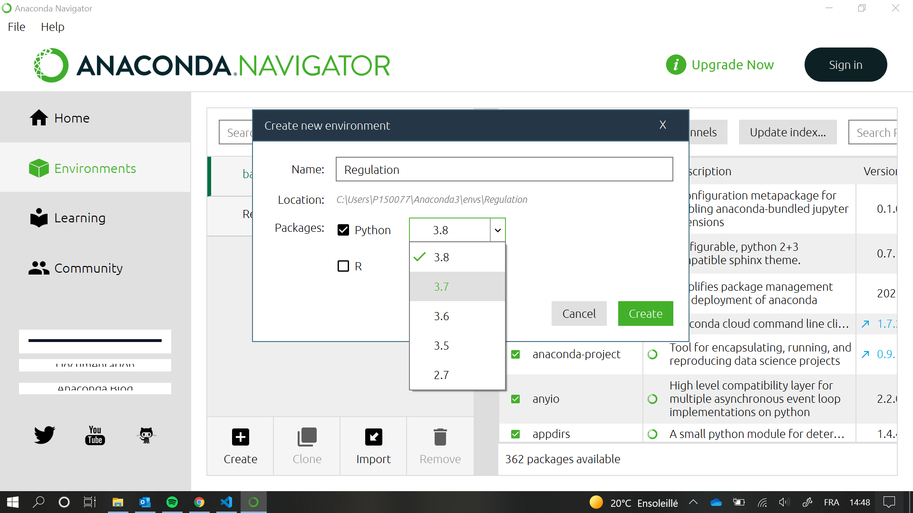
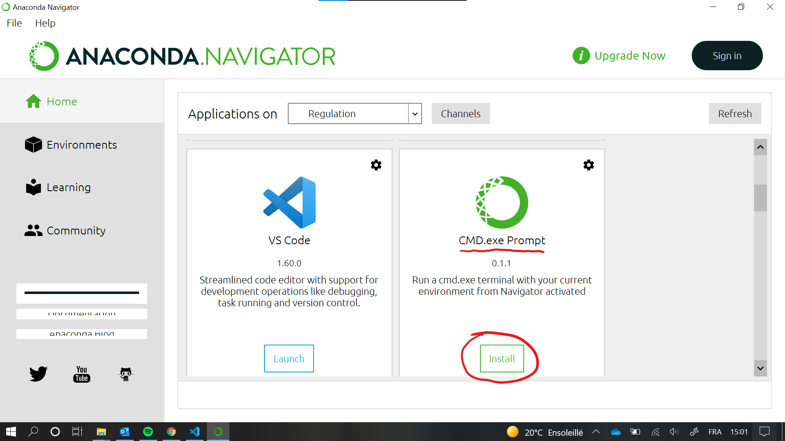
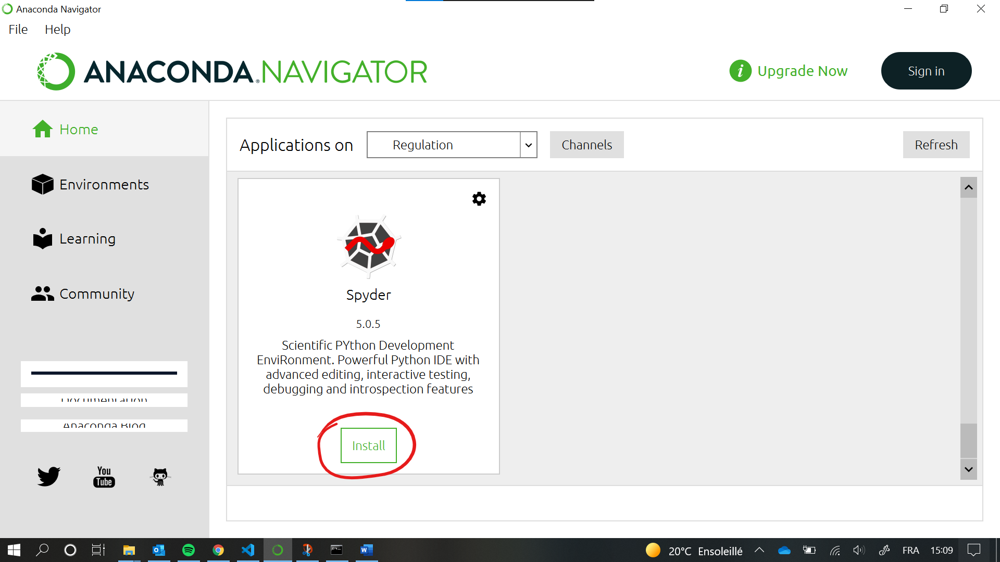
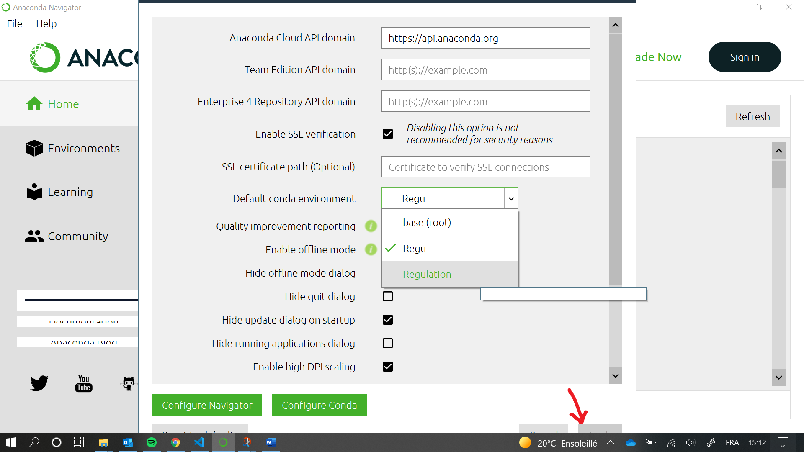
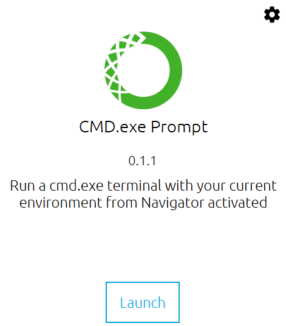

Introduction¶
Bienvenue dans la documentation du laboratoire de régulation.
Présentation de la structure de la doc¶
Présentation du langage Python¶
Installation d’Anaconda¶
Télécharger Anaconda : https://www.anaconda.com/products/individual-d
Suivre les instructions d’installation du fichier téléchargé.
Note
Même si l’installation d’Anaconda est assez rapide, il faut lui laisser le temps d’installer toutes ses applications en arrière-plan lors de la première ouverture de celui-ci. Néanmoins, vous devriez être en mesure de suivre les prochaines étapes pendant que ces applications s’installent.
Créer un environnement propre au cours (Python 3.7)¶
La version de Python installée avec Anaconda n’est pas celle qu’il faut pour utiliser les packages utiles pour le laboratoire de régulation. Dès lors, il faut créer un environnement avec la bonne version de Python. Pour ce faire, il suffit de suivre les instructions suivantes:
Ouvrez l’onglet
Environments.Poussez sur le bouton
Create.Configurez le nouvel environnement en lui donnant un nom sans espaces ni caractères spéciaux et en choisissant la version 3.7 de Python.
Note
Si l’option
3.7n’apparaît pas dans la liste déroulante, cela veut dire qu’Anaconda n’est pas encore prêt. Il faut donc attendre que tout s’installe correctement en arrière-plan. Attendez un peu et recommencez l’opération jusqu’à ce que l’option3.7apparaisse bien dans la liste déroulante.Retournez dans le menu
Home.Installez l’application
CMD.exe Prompt.Installer l’IDE
Spyder.Ouvrez les paramètres d’Anaconda en allant dans
File->Preferencesou via le raccourciCTRL+P.Configurez votre environnement comme environnement par défaut en le sélectionnant dans la liste déroulante et en validant les modifications.

{kind=link}
{kind=link}
{kind=link}
{kind=link}
{kind=link}
{kind=link}
Installation du package Python Control¶
Ouvrez la console de commande d’Anaconda (Anaconda Prompt):
Entrez la commande suivante:
conda install -c conda-forge control
À la question
Proceed?, entrezyet valider avec la toucheenter.Une fois l’installation terminée, vous pouvez fermer la console.
{kind=link}
Installation du package Serial (optionnel)¶
Configurer Spyder¶
{kind=link}
{kind=link}
{kind=link}
Télécharger le package Python du labo¶
Afin de pouvoir utiliser les fonctions utiles pour le laboratoire de régulation, il est nécessaire de télécharger la dernière version du package python ReguLabFct ici.
Note
Il est possible que votre navigateur internet ou votre antivirus empêche le téléchargement en le considérant comme une menace. Vous pouvez forcer le téléchargement car, promis, ce n’est pas un virus 😉
Une fois téléchargé, il faut le placer dans l’espace de travail (= dossier) où se trouveront tous vos futurs scripts afin que ces derniers puissent l’utiliser.
Note
Vous pouvez créer ce dossier où vous le souhaitez mais devrez impérativement écrire vos scripts dans ce dossier durant le laboratoire.
Exemple de structure:
Dossier/
Labo1
Labo2
…
Télécharger la documentation du package ReguLabFct¶
Afin de faciliter l’usage du package ReguLabFct, une documentation existe et peut être téléchargée ici.
Une fois le dossier téléchargé, il suffit de le décompresser et de double-cliquer sur le fichier DocumentationFct.html pour voir s’ouvrir une page web présentant les fonctions du package ReguLabFct.